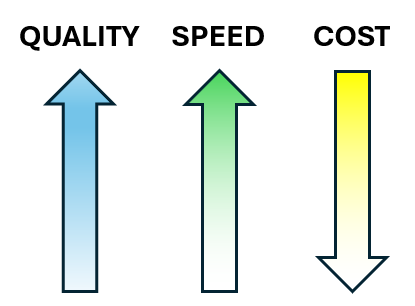

API Cost Savings Example
Consider the following business domain model for a fictional insurance business. Note that the diagram has been
simplified for brevity. In practice an actual business domain model typically includes many more entities,
attributes, and relationships.

Suppose a business goal is to build an API enabling clients to view the available insurance plans and to select one or more in which to enroll. Since in this example the business domain model already exists the next step is to create an OpenAPI specification defining the API's client interface contract. For each resource listed in the business domain model the developer applies standard API design patterns to create a collection of C.R.U.D (Create, Read, Update, Delete) API endpoints. For each endpoint the developer then defines the corresponding HTTP operations, request/response data payloads, and schema definitions. When the work is finished the resulting OpenAPI specification provides a comprehensive definition of the API's client interface.

Cost Savings via the REST API Generator
By using the REST API Generator development activities that used to take weeks to perform manually can now be accomplished automatically in a matter of minutes. API client interface contracts and foundational implementation code can be quickly generated so that developers can focus on the API's business logic to more quickly realize the API's business value proposition. For example, applying the REST API Generator to the above business domain model yields the following API development artifacts:
- API client interface specification documented using the OpenAPI standard
- Java code implementation of the API's skeleton infrastructure including
REST controller endpoints
and data schema DTOs (Data Transfer Objects)
It only takes a few minutes for the REST API Generator to produce these two core API solution artifacts.
The tool
licensing cost is a dramatic savings compared to the cost for writing the OpenAPI specification manually. In addition the generated
API skeleton code provides a significant head start for API developers further reducing the effort, cost, and time to market. Other benefits
include improved API design quality, inclusion of API design best practices (e.g., URI naming patterns based on a business domain model,
paged list queries, standardized schemas for searching and error reporting), stronger decoupling between API clients and developers, and
earlier unblocking of client integration activities.